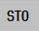

Im Fenster "SIC/SCC - PROFIdrive Telegramm" werden die Bedeutungen und Zustände der einzelnen Bits im Steuer- und Zustandswort dargestellt.
Mit Hilfe des Safety Info Channel (SIC) werden Zustandsinformationen der Safety Integrated-Funktionalität des Antriebs (S_ZSW1B, S_ZSW2B, S_ZSW3B und S_V_LIMIT_B) an die übergeordnete Steuerung übertragen.
Mit Hilfe des Safety Control Channel (SCC) können Steuerinformationen (S_STW1B und S_STW3B) von der übergeordneten Steuerung an die Safety-Funktionen des Antriebs übertragen werden.
Hinweis: gilt nur bei Telegramm 701
Folgende Zustände sind möglich:
Symbol | Bedeutung |
|---|---|
|  | Bit hat den Wert 0 |
Bit hat den Wert 1 |
Im Fenster "SIC/SCC - PROFIdrive Telegramm" können Sie zusätzlich zwischen den folgenden Ansichten wechseln:
PROFIsafe
SIC/SCC
Über den Softkey "Details" wird eine bitweise Ansicht des Steuer- und des Zustandswortes angezeigt.
| Hinweis |
Ansicht ändernSie können in dieser Diagnoseansicht die Signal-Informationen verschiedener Antriebe anzeigen. Zu diesem Zweck können Sie über die Softkeys "Antrieb-", "Antrieb+" oder "Antrieb auswählen" jeweils den gewünschten Antrieb einstellen. |